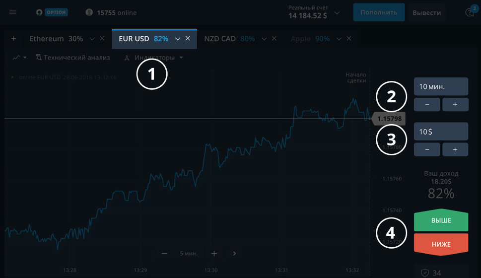

Как я в 26 лет заработала на машину стоимостью 5 370 000 рублей всего за 4 месяца [Подробная инструкция]
У вас достаточно денег? У вас есть всё, о чём вы мечтали? Вас устраивает ваша жизнь? Если — да, то не теряйте время и просто закройте эту страницу.
Остальным хочу рассказать о том, как вы сможете больше не ходить на работу с 9 утра до 18 вечера и начать зарабатывать по 25 000 – 30 000 рублей в день буквально за 2 дня не выходя из дома.
Это сделала я, и вы, если захотите, тоже сможете это сделать! От меня не убудет, а кому-то это поможет в корне изменить всю жизнь и наконец-то обрести финансовую свободу.
Немного о себе. Меня зовут Елена Кузнецова, мне 26 лет, я из Питера, самая обычная девушка из небогатой семьи. Я была поздним ребёнком у своих родителей. Моя мама работала медсестрой в городской поликлинике, а папа был водителем мусоровоза.
Всё детство прошло в постоянном стремлении купить подешевле еду, одежду и, если повезёт, отложить немного денег на отпуск. Раз в 3–4 года даже получалось отдохнуть летом у Чёрного моря.
Я закончила школу. Учиться в институте возможности не было, нужно было добывать деньги для себя и родителей (которые к тому времени уже были на пенсии).
И я пошла работать. Устроилась консультантом-продавцом с зарплатой около 27 000 рублей в месяц. На дворе стоял 2008 год, и это был отличный заработок для Питера.
Денег на всё хватало, но у меня была мечта — новый автомобиль BMW X6. Он очень дорогой, я знала, что придётся долго копить. Но меня это не смущало — ведь это же мечта! А мечты так просто не исполняются. Так я думала тогда...
А через 7 лет грянул кризис. Это был декабрь 2014 года, доллар «полетел в космос», люди паниковали. Мне было особо нечего терять, и я спокойно продолжала работать...
Наш магазин детской одежды смог просуществовать ещё 3 месяца, и в марте 2015 года он обанкротился, а я «осталась на улице». Без работы, без средств к существованию, на шее у родителей-пенсионеров.
Майские праздники 2015 года прошли в нашей семье невесело. Я второй месяц неистово перекапывала интернет в поисках хоть каких-то возможностей.
Ещё почти через 2 недели таких поисков, практически полностью отчаившись, я наткнулась на историю какого-то парня о том, как он сумел заработать за 1 месяц 520 000 рублей в интернете, сидя за компьютером, не выходя из дома и не вставая с кресла.
Это был рассказ о том, как он торговал на онлайн-платформе Олимп Трейд.
Меня как будто ударило током. Вот он, мой шанс, который бывает раз в жизни!
Сперва я почти ничего не поняла, но стала разбираться, копать разные сайты, форумы и блоги, перечитала кучу информации на эту тему и в результате во всём разобралась. Какое же это было счастье! До сих пор вспоминаю этот момент, когда вдруг всё поняла...
Немного перебью саму себя, потому что хочу, чтобы вы тоже поняли, о чём я буду говорить дальше. Коротко и ясно расскажу о трейдинге, и вам не придётся искать информацию о том, что это такое, по сотням разных сайтов, как это делала когда-то я. Сэкономлю ваше время.
Трейдинг — это абсолютно новый, очень простой, быстрый и невероятно выгодный способ заработка на финансовых рынках. Как вы, может быть, знаете, на этих рынках постоянно покупается и продаётся разная валюта: доллары, евро, фунты и т.д. 24 часа в сутки, 7 дней в неделю, то есть непрерывно, без выходных и праздников.
Ваша задача — бесплатно открыть счёт для купли/продажи валюты на трейдинговой онлайн-платформе (это называется сайт брокера). После этого нужно лишь пополнить этот счёт, назначить сумму сделки и правильно определять, куда в следующие минуты или часы пойдёт курс валюты, например, доллара.
Есть всего два варианта: выше или ниже. Время сделки, на которое вы хотите сделать прогноз, вы выбираете сами — от 1 минуты до 3 часов. Если определили правильно, то заработали почти в 2 раза больше суммы сделки. Если — неправильно, то сумма сделки списывается с вашего счёта.
Это и будет ваша работа, а называться вы будете «трейдер». Так работать вы сможете в любые дни, в любое время суток и находясь где угодно. Вам будет нужен лишь компьютер и доступ в интернет. Видите, всё очень просто, справится даже ребёнок!
Когда я во всём разобралась до конца, мне уже очень не терпелось, и я решила попробовать.
Бесплатно зарегистрировалась, открыв счёт на сайте того же брокера — Олимп Трейд. Как оказалось впоследствии — это самый лучший русскоязычный брокер.
После регистрации на моём счёте было 10 000 виртуальных денег для теста и обучения — их этот брокер даёт тоже бесплатно для тренировки всем.
Сперва я попробовала свои силы на этих тестовых деньгах, всё получалось, я буквально за первый же час заработала ещё 11 000 чистыми, правда это были только цифры, а мне хотелось реальных денег. Но их можно заработать только пополнив свой счёт. Способов это сделать много: любая пластиковая карта Виза или Мастеркард, Киви, Вебмани, Яндекс Деньги.
В этот же день вечером я положила на счёт реальные деньги. У меня от старой работы осталась сбербанковская карта Виза, с неё я и пополнила счёт. Для начала положила немного, у этого брокера можно начать всего с 350 рублей, и это огромное преимущество! Уж такое пополнение я могла себе позволить.
Через час после начала с реальными деньгами у меня на счете уже было $26!!! Это было невероятно! Сердце выпрыгивало из груди, я с трудом могла дышать от волнения! У меня всё получалось!!!
Всю следующую ночь я не сомкнула глаз, а на утро на счете было уже $197!!! Сто девяносто семь долларов США!!! Из 350 рублей, положенных на счёт вечером!!! Я не могла в это поверить!!! Хотелось продолжать до бесконечности, но сон одолел и я отключилась, с трудом дойдя до кровати...
Едва открыв глаза в полдень, я снова заглянула в кабинет, и снова увидела $197 на своём счёте. Значит не приснилось!!!
Весь следующий день я не отходила от компьютера, и к полуночи на счёте уже было $773!!! Я наизусть запомнила эти первые цифры моего успеха!
То есть я заработала $773 минус $197, которые были у меня на счёте утром, получилось $576 за 12 часов! Тогда это было больше 28 000 рублей! За полдня!!! Столько я ещё никогда не зарабатывала в своей жизни!
Перед сном я запросила выплату 27 000 рублей на свою карту Visa от Сбербанка. Всё ещё не до конца веря в успех, я провалилась в сон.
Проснулась утром от звука смски в моём телефоне. Поступление 27 тысяч рублей на карту!!! 27 000 рублей только что поступило на мою карту!!!
Ещё вчера там оставалось меньше 400 руб. после того, как я положила 100 руб. на телефон и пополнила свой счёт в Олимп Трейд на 350 руб., а только что пришло 27 000 рублей!!! Метод работает!!!
Такого по-настоящему доброго утра не было уже очень-очень-очень давно!
За следующую неделю я заработала больше 200 000 рублей, до конца июня — больше 850 000 рублей, к концу лета — почти 2 800 000 рублей, а в сентябре я купила свою мечту, о которой я уже и думать забыла! Новую BMW X6 за 5 370 000 рублей!!!
Да, взяла чуть больше 1 000 000 рублей кредит, но с моими теперешними заработками — это не проблема. В итоге этот кредит я вернула через 2 месяца, уже в ноябре, не напрягаясь вообще.
А вот, кстати, мы с ней только из автосалона, полюбуйтесь.

Сижу сейчас, пишу этот текст и вспоминаю. Пытаюсь понять, как всё так получилось? А ведь очень просто! Я лишь поверила в себя! Сначала поверила в то, что найду свой шанс, потом поверила, что у меня получится также, как у того парня, чей пост я тогда прочла! Поверила по-настоящему!
Надо просто поверить, что у вас всё обязательно получится! Это очень важно, без этого ничего не будет в жизни вообще! Никогда! Если вы не поверите в себя, то постепенно будете привыкать к мысли, что всё самое хорошее в вашей жизни уже было. И это материализуется, так и будет...
Если вы за пеленой отчаяния, недоверия ко всему и кажущейся безысходности потеряете способность видеть шанс изменить всю свою жизнь, то вы никогда её не измените!
Старайтесь видеть такой шанс во всём: в любых событиях вокруг вас, в людях, которые почему-то встречаются на вашем жизненном пути, в историях, которые почему-то попались вам на глаза и которые вы читаете, во всём! Всегда используйте эти шансы, ведь они ваши! И у вас всё обязательно получится!!!
Я почему-то всегда сильно верила в то, что я куплю машину своей мечты, и я её купила! Не накопила на неё, а просто купила, с дохода, который не иссякает, а только постоянно увеличивается по сей день. И в это же время я перестала зависеть от каких бы то ни было начальников, мне не нужно больше идти на работу к 9:00 с одним выходным в неделю и стоять на ногах до 18:00, как это было раньше.
Сейчас я зарабатываю в день больше, чем я зарабатывала в месяц! Это невероятное чувство свободы!!!
Чудо ли это? Не знаю, возможно, но — обыкновенное. Просто прочитала статью, просто поверила в себя и начала делать! И всё получилось!
Что-то меня накрыли воспоминания и я немного отвлеклась...
Сперва прочитайте всё до конца, а потом вернитесь к п. 1 и начинайте делать!
-
Вам нужно открыть счёт у брокера. Это совершенно БЕСПЛАТНО. Для этого заходите на сайт Олимп Трейда, кликнув сюда.
-
В форме регистрации вводите имя, ваш e-mail, номер телефона, пароль, выбираете валюту счета и ставите галочку напротив соглашения. Нажимаете "Зарегистрироваться".
-
Как сделать прогноз?
-
Выбираете валютную пару (курс каких валют вы будете прогнозировать). Например, нажмите на EUR/USD, если хотите прогнозировать, сколько долларов стоит 1 евро.
-
Назначаете сумму сделки. Минимальная сумма сделки — 1 доллар.
-
Выбираете время сделки. Это время, через которое курс выбранных в п. I валют будет сравниваться с вашим прогнозом. Минимальное время сделки — 1 минута. Я обычно выбираю или 1, или 5 минут.
-
Делаете прогноз. Кликайте либо на ВЫШЕ, либо на НИЖЕ. Сразу после клика сделка открывается.
-
-
Но реальные деньги вы начнёте зарабатывать только после того, как пополните ваш счёт. Это можно сделать с любой пластиковой картой Виза или Мастеркард, либо через QIWI, WebMoney и другие платежные системы. Минимальная сумма пополнения состовляет 10 долларов.. Кликайте на кнопку «ПОПОЛНИТЬ»:

Выбираете «Реальный счет» и еще раз жмете кнопку пополнить.

Появится окно с выбором способа пополнения счёта:

А теперь самое интересное! У брокера Олимп Трейд сейчас идёт акция — на ваш счёт будет зачислено в 2 раза больше денег, если вы пополните счёт в течение 1 часа после его открытия на сумму 30, 100 или 200 долларов!
Только представьте, это как будто вам начислили премию на вашей работе, например, те же 200, а на руки вы получили 400 долларов!
Но это только в течение 1 часа после открытия счёта, так что торопитесь!
Пополнять счёт очень просто: выбираете способ пополнения и сумму, кликаете на кнопку с надписью «ПОПОЛНИТЬ» и делаете то, что будет написано.
Вот и вся инструкция! После пополнения счёта переходите к п. 3 и начинайте зарабатывать реальные деньги!
Вам будет интересно